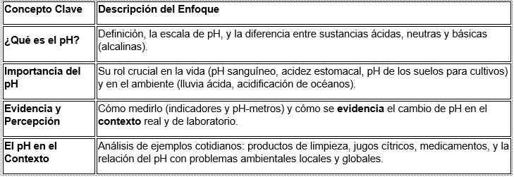

BOTONES
Estimados estudiantes y apreciados profesores,
Es un placer darles la bienvenida a este Ambiente Virtual de Aprendizaje (AVA) de Ciencias Naturales, diseñado especialmente para el Grado 9°. Prepárense para una fascinante inmersión en el mundo de la Química, donde exploraremos un concepto fundamental que moldea nuestra vida diaria: el pH.
A través de actividades interactivas, simulaciones y recursos multimedia, descubriremos qué es el pH, por qué es tan importante en los sistemas biológicos y ambientales, cómo se evidencia y percibe en nuestro contexto (desde los alimentos que consumimos hasta la salud de nuestros ecosistemas).
Nuestro AVA está alineado con los referentes de calidad educativa de Colombia, garantizando un aprendizaje significativo y pertinente:
1. Derechos Básicos de Aprendizaje (DBA)
Este curso se enfocará en potenciar el desarrollo de los DBA de Ciencias Naturales para el grado 9°, centrándonos en el componente de Entorno Físico (Química). Específicamente, trabajaremos para que los estudiantes:
Comprendan las propiedades de la materia y cómo se relaciona con la energía para predecir y explicar fenómenos de la naturaleza.
Identifiquen y expliquen las propiedades de las soluciones acuosas, como la concentración y el pH, y su importancia en sistemas biológicos, industriales y ambientales.
Utilicen modelos (como la escala de pH) para representar y predecir los efectos de sustancias ácidas y básicas en diferentes contextos.
2. Estándares Básicos de Competencias (EBC)
Abordaremos el estándar relacionado con:
"Establezco relaciones entre las propiedades macroscópicas y submicroscópicas de la materia y las transformaciones químicas y físicas."
Esto implica que los estudiantes estarán en capacidad de:
Explicar fenómenos de la naturaleza a partir de las propiedades de la materia (ácidos y bases).
Argumentar sobre la importancia del control del pH en procesos industriales, agricultura y la salud.
Desarrollar habilidades científicas de indagación, modelización y argumentación al investigar y experimentar con el pH en su entorno.
Durante este curso, exploraremos los siguientes aspectos clave sobre el pH:

A los estudiantes, los animamos a ser curiosos, a experimentar con las simulaciones y a vincular activamente el conocimiento del pH con su entorno. A los profesores, les extendemos una invitación a utilizar este AVA como un recurso flexible y potente para enriquecer sus estrategias pedagógicas y facilitar la transversalización de las competencias científicas.
¡Comencemos este emocionante módulo y descubramos el equilibrio químico que rige nuestro mundo!
Atentamente,
El Equipo de Desarrollo del AVA de Ciencias Naturales
Alejandra Gil Diaz Pedro Arley Rivas Angelica María Rojas
Obra publicada con Licencia Creative Commons Reconocimiento Compartir igual 4.0